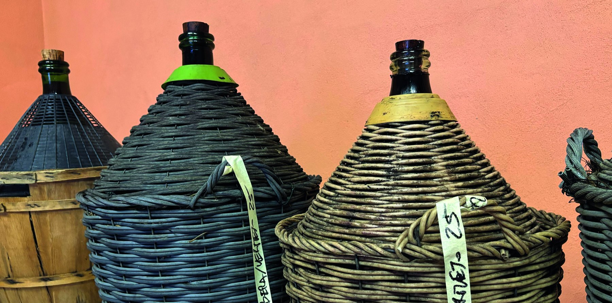
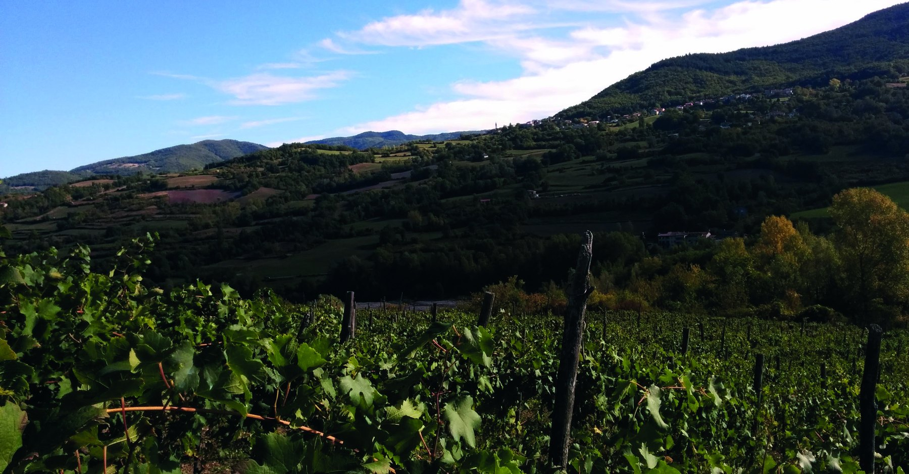

01
8,9 ettari
Superficie complessiva dell'azienda, in alta collina, con circa 5,9 ettari coltivati.
La cantina
StraCrösa è gestita dall'Azienda Agricola Corrado Volpini: una piccola impresa agricola individuale, a conduzione familiare, in fase di sviluppo vitivinicolo.
Profilo
L'azienda nasce nel 2003 per allevamento e dal 2016 si espande nel settore vitivinicolo. La cantina è oggi operativa e lavora su vigneti collocati tra 550 e 650 metri di altitudine.
Superficie complessiva dell'azienda, in alta collina, con circa 5,9 ettari coltivati.
Firagni e Moiasse, su versanti opposti della valle, con vitigni differenti.
Nessun diserbo chimico, fermentazioni spontanee, assenza di filtrazioni.

